[Day 3 종합실습] 학사관리시스템 DB 설계 · 구축 · 조회
SKALA 데이터분석 및 AIOps | PostgreSQL 학사관리시스템 | 광주캠퍼스 4반 박영서 | 2026-07-22
실습 결과 요약
- 실행환경: PostgreSQL 17.10 (Homebrew, macOS) / psql CLI + pgAdmin 4
- DB skala_edu · 스키마 academy에 테이블 5개 구축 — department · professor · student · course · enroll
- 제약조건: PK / FK / UNIQUE / CHECK / NOT NULL / DEFAULT / ON DELETE CASCADE 전부 적용
- 샘플 데이터 입력: 테이블당 10건 이상 — 10 / 10 / 12 / 10 / 15건
- 학생:과목 N:M 관계를 enroll 교차 테이블로 분해, 동일 과목 중복 신청은 UNIQUE로 차단
- 본문은 실습 단계 1~8 순서 그대로 구성 — 각 단계마다 SQL문과 실행 결과 화면(실제 캡처) 수록
학사관리시스템 요구사항 (설계 방향)
기능 요구사항
- 학과·교수·학생·과목·수강신청 5개 대상을 관리한다
- 학과는 여러 교수·학생·과목을 보유한다 (학과 1 : N)
- 과목은 하나의 학과에 개설되고, 한 명의 교수가 담당한다
- 학생은 여러 과목을 수강하고, 과목도 여러 학생이 수강한다 (N : M → enroll 교차 테이블로 분해)
- 같은 학생이 같은 과목을 중복 신청할 수 없다 →
UNIQUE(student_id, course_id)
- 성적은 학기 중 "미평가" 상태가 존재한다 → score NULL 허용 (COALESCE/CASE로 표시 처리)
데이터 무결성 요구사항 (설계 방향)
| 항목 | 설계 반영 |
|---|
| 식별자 | 모든 테이블 SERIAL 기반 대리키 PK (자동 증가) |
| 참조 무결성 | 소속·개설·담당·신청 관계를 전부 FK로 강제, 학생 삭제 시 수강이력은 ON DELETE CASCADE |
| 도메인 제약 | 직급(교수/부교수/조교수) · 학년(1~4) · 학적상태(재학/휴학/졸업) · 학점(1~3) · 정원(>0) · 성적(0~100)을 CHECK로 제한 |
| 중복 방지 | 학과명, 교수·학생 이메일, (학생, 과목) 조합에 UNIQUE |
| 기본값 | 학적상태 '재학', 정원 30, 수강신청일 CURRENT_DATE |
1. PostgreSQL 접속 확인 (psql 또는 DBeaver)
SQL
SELECT version();
SELECT current_database(), current_user, current_schema;
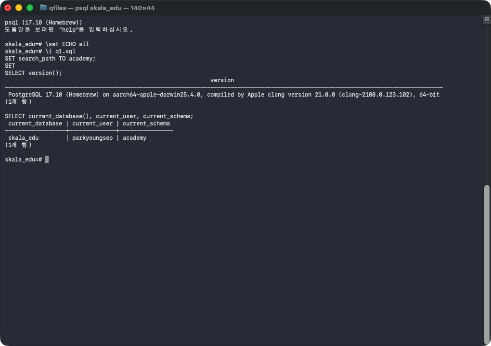
psql 접속 실제 화면 — PostgreSQL 17.10, 현재 DB skala_edu · 사용자 parkyoungseo · 스키마 academy 확인.
pgAdmin 4 접속 확인 (GUI)
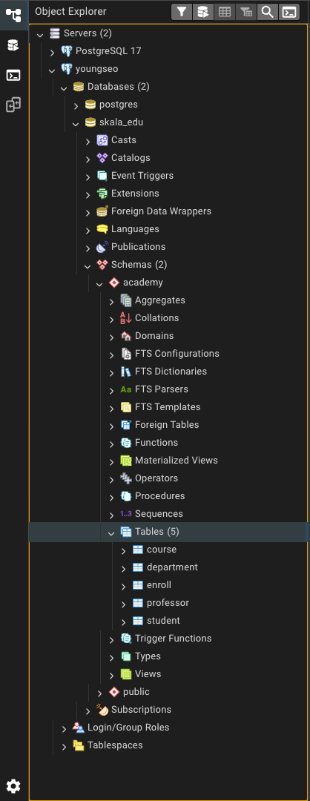
pgAdmin 4 Object Explorer — PostgreSQL 17 서버 접속 후 skala_edu → Schemas → academy → Tables(5)에서 course · department · enroll · professor · student 5개 테이블을 확인. CLI(psql)와 GUI(pgAdmin) 양쪽에서 동일 스키마 접근을 검증했다.
2. CREATE DATABASE / CREATE SCHEMA 실행
SQL — sql/01_create_database.sql, sql/02_ddl_tables.sql
-- 데이터베이스 생성
CREATE DATABASE skala_edu
ENCODING 'UTF8'
TEMPLATE template0;
COMMENT ON DATABASE skala_edu IS 'SKALA 교육과정 실습용 DB (종합실습 1~4 공용)';
-- 학사관리시스템 전용 스키마 생성
CREATE SCHEMA IF NOT EXISTS academy;
SET search_path TO academy;
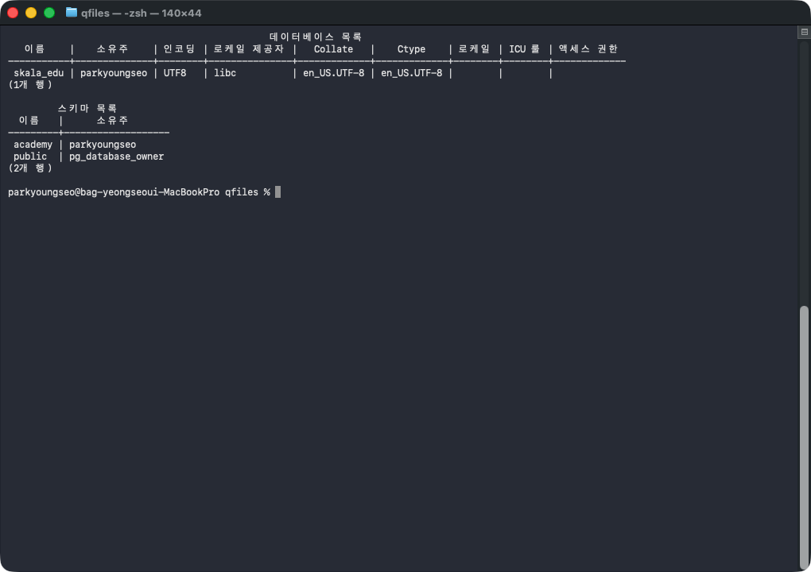
실행 결과 ① psql — \l에서 skala_edu DB(UTF8), \dn에서 academy 스키마 생성 확인. 종합실습 2~4에서도 이 DB에 스키마를 추가해 재사용한다.
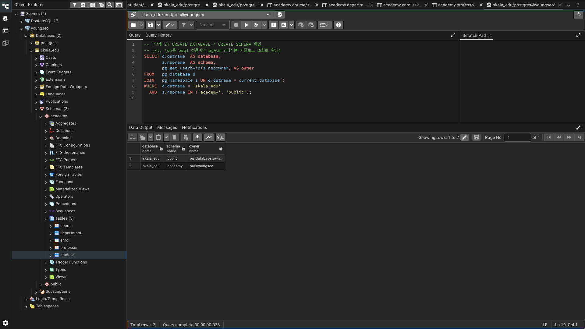
실행 결과 ② pgAdmin 4 Query Tool — \l·\dn은 psql 전용 메타명령이므로 pgAdmin에서는 pg_database·pg_namespace 카탈로그 조회로 동일 내용 확인: skala_edu DB에 academy 스키마(소유자 parkyoungseo) 존재 (Total rows: 2).
3. ERD 설계
까마귀발(Crow's Foot) 표기. 관계선은 서로 겹치지 않게 배치했고, 좌측 상단에 범례(설명문)를 포함했다.
pgAdmin ERD Tool 교차 검증
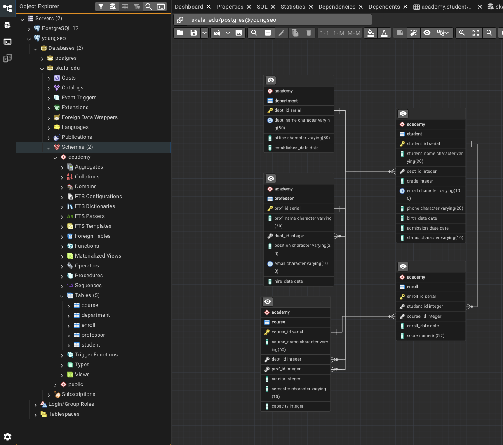
pgAdmin 4의 ERD For Database 도구로 구축된 스키마를 자동 시각화한 화면 — 테이블 5개와 FK 관계(까마귀발 표기)가 설계 ERD와 일치함을 교차 확인했다. 좌측 Object Explorer에는 skala_edu → academy → Tables(5)가 함께 보인다.
4. CREATE TABLE — 제약조건 포함 DDL 작성
SQL — sql/02_ddl_tables.sql (제약조건 포함 전체 DDL)
CREATE SCHEMA IF NOT EXISTS academy;
SET search_path TO academy;
-- 1) 학과
CREATE TABLE department (
dept_id SERIAL PRIMARY KEY,
dept_name VARCHAR(50) NOT NULL UNIQUE,
office VARCHAR(50),
established_date DATE NOT NULL
);
-- 2) 교수 (department 1:N professor)
CREATE TABLE professor (
prof_id SERIAL PRIMARY KEY,
prof_name VARCHAR(30) NOT NULL,
dept_id INT NOT NULL REFERENCES department(dept_id),
position VARCHAR(20) NOT NULL CHECK (position IN ('교수', '부교수', '조교수')),
email VARCHAR(100) NOT NULL UNIQUE,
hire_date DATE NOT NULL
);
-- 3) 학생 (department 1:N student)
CREATE TABLE student (
student_id SERIAL PRIMARY KEY,
student_name VARCHAR(30) NOT NULL,
dept_id INT NOT NULL REFERENCES department(dept_id),
grade INT NOT NULL CHECK (grade BETWEEN 1 AND 4),
email VARCHAR(100) NOT NULL UNIQUE,
phone VARCHAR(20), -- NULL 허용 → COALESCE 실습
birth_date DATE NOT NULL,
admission_date DATE NOT NULL,
status VARCHAR(10) NOT NULL DEFAULT '재학'
CHECK (status IN ('재학', '휴학', '졸업'))
);
-- 4) 과목 (department 1:N course, professor 1:N course)
CREATE TABLE course (
course_id SERIAL PRIMARY KEY,
course_name VARCHAR(60) NOT NULL,
dept_id INT NOT NULL REFERENCES department(dept_id),
prof_id INT NOT NULL REFERENCES professor(prof_id),
credits INT NOT NULL CHECK (credits BETWEEN 1 AND 3),
semester VARCHAR(10) NOT NULL,
capacity INT NOT NULL DEFAULT 30 CHECK (capacity > 0)
);
-- 5) 수강신청 (student N:M course 교차 테이블)
CREATE TABLE enroll (
enroll_id SERIAL PRIMARY KEY,
student_id INT NOT NULL REFERENCES student(student_id) ON DELETE CASCADE,
course_id INT NOT NULL REFERENCES course(course_id),
enroll_date DATE NOT NULL DEFAULT CURRENT_DATE,
score NUMERIC(5,2) CHECK (score IS NULL OR score BETWEEN 0 AND 100),
UNIQUE (student_id, course_id) -- 중복 수강신청 방지
);
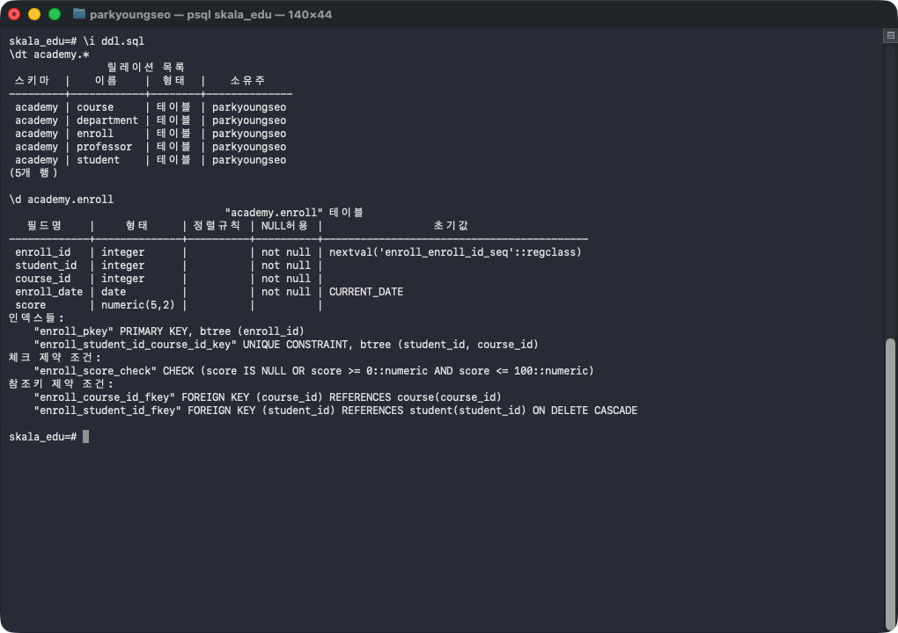
실행 결과 ① psql — 테이블 5개 생성 확인(\dt)과 교차 테이블 enroll의 제약조건 상세(\d). PK·UNIQUE·CHECK·FK(ON DELETE CASCADE)가 모두 반영됨. 전체 DDL 실행 로그는 outputs/02_ddl_result.txt.
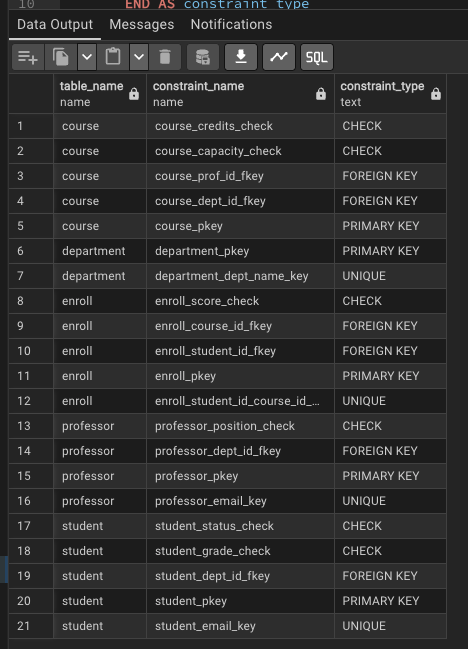
실행 결과 ② pgAdmin 4 Query Tool — pg_constraint 카탈로그를 조회해 5개 테이블의 제약조건 21개(PRIMARY KEY 5 · FOREIGN KEY 6 · UNIQUE 4 · CHECK 6)가 전부 생성됐음을 확인.
5. INSERT INTO (테이블 데이터는 최소 10건 이상)
SQL — sql/03_dml_insert.sql (전체 INSERT문)
-- 1) 학과 10건
INSERT INTO department (dept_name, office, established_date) VALUES
('컴퓨터공학과', '공학관 301호', '1985-03-01'),
('소프트웨어학과', '공학관 302호', '2005-03-01'),
('인공지능학과', '공학관 401호', '2020-03-01'),
('전자공학과', '공학관 201호', '1980-03-01'),
('산업공학과', '공학관 101호', '1990-03-01'),
('경영학과', '경상관 201호', '1975-03-01'),
('수학과', '자연관 301호', '1970-03-01'),
('통계학과', '자연관 302호', '1988-03-01'),
('영어영문학과', '인문관 201호', '1972-03-01'),
('디자인학과', '예술관 101호', '2000-03-01');
-- 2) 교수 10건
INSERT INTO professor (prof_name, dept_id, position, email, hire_date) VALUES
('김민수', 1, '교수', 'minsu.kim@skala.ac.kr', '2005-03-01'),
('이서연', 1, '부교수', 'seoyeon.lee@skala.ac.kr', '2012-09-01'),
('박지훈', 2, '교수', 'jihun.park@skala.ac.kr', '2008-03-01'),
('최은지', 3, '조교수', 'eunji.choi@skala.ac.kr', '2021-03-01'),
('정도현', 3, '부교수', 'dohyun.jung@skala.ac.kr', '2018-09-01'),
('강수빈', 4, '교수', 'subin.kang@skala.ac.kr', '2003-03-01'),
('조현우', 5, '부교수', 'hyunwoo.cho@skala.ac.kr', '2014-03-01'),
('윤하늘', 6, '교수', 'haneul.yoon@skala.ac.kr', '2001-09-01'),
('임재원', 7, '조교수', 'jaewon.lim@skala.ac.kr', '2022-03-01'),
('한지민', 8, '부교수', 'jimin.han@skala.ac.kr', '2016-09-01');
-- 3) 학생 12건 (phone 일부 NULL → COALESCE 실습용)
INSERT INTO student (student_name, dept_id, grade, email, phone, birth_date, admission_date, status) VALUES
('박영서', 1, 4, 'youngseo.park@skala.ac.kr', '010-1111-2222', '2001-03-21', '2020-03-02', '재학'),
('김하람', 1, 3, 'haram.kim@skala.ac.kr', NULL, '2003-05-14', '2022-03-02', '재학'),
('이도윤', 2, 2, 'doyun.lee@skala.ac.kr', '010-2222-3333', '2004-11-02', '2023-03-02', '재학'),
('정서아', 2, 1, 'seoa.jung@skala.ac.kr', '010-3333-4444', '2006-01-25', '2026-03-02', '재학'),
('최시우', 3, 2, 'siwoo.choi@skala.ac.kr', NULL, '2004-07-19', '2023-03-02', '휴학'),
('강주원', 3, 1, 'juwon.kang@skala.ac.kr', '010-4444-5555', '2006-09-08', '2026-03-02', '재학'),
('조아인', 4, 3, 'ain.cho@skala.ac.kr', '010-5555-6666', '2003-02-11', '2022-03-02', '재학'),
('윤지호', 5, 4, 'jiho.yoon@skala.ac.kr', NULL, '2001-12-30', '2020-03-02', '졸업'),
('임나은', 6, 2, 'naeun.lim@skala.ac.kr', '010-6666-7777', '2004-04-17', '2023-03-02', '재학'),
('한선우', 7, 3, 'sunwoo.han@skala.ac.kr', '010-7777-8888', '2003-08-23', '2022-03-02', '재학'),
('서예준', 8, 1, 'yejun.seo@skala.ac.kr', NULL, '2006-06-06', '2026-03-02', '재학'),
('오다인', 1, 2, 'dain.oh@skala.ac.kr', '010-8888-9999', '2004-10-10', '2023-03-02', '휴학');
-- 4) 과목 10건
INSERT INTO course (course_name, dept_id, prof_id, credits, semester, capacity) VALUES
('데이터베이스', 1, 1, 3, '2026-1', 40),
('자료구조', 1, 2, 3, '2026-1', 40),
('운영체제', 1, 1, 3, '2026-2', 35),
('웹프로그래밍', 2, 3, 3, '2026-1', 30),
('소프트웨어공학', 2, 3, 2, '2026-2', 30),
('머신러닝', 3, 4, 3, '2026-1', 25),
('딥러닝', 3, 5, 3, '2026-2', 25),
('회로이론', 4, 6, 3, '2026-1', 35),
('경영전략', 6, 8, 2, '2026-1', 50),
('확률과통계', 8, 10, 3, '2026-1', 45);
-- 5) 수강신청 15건 (score 일부 NULL = 미평가)
INSERT INTO enroll (student_id, course_id, enroll_date, score) VALUES
(1, 1, '2026-02-10', 95.50),
(1, 2, '2026-02-10', 88.00),
(1, 6, '2026-02-11', NULL),
(2, 1, '2026-02-10', 76.25),
(2, 4, '2026-02-12', 82.00),
(3, 4, '2026-02-11', 91.00),
(3, 5, '2026-02-11', NULL),
(4, 1, '2026-02-13', 64.50),
(5, 6, '2026-02-10', 58.00),
(6, 6, '2026-02-12', NULL),
(7, 8, '2026-02-10', 79.75),
(9, 9, '2026-02-11', 85.00),
(10, 10, '2026-02-12', 93.25),
(11, 10, '2026-02-13', NULL),
(12, 2, '2026-02-10', 47.00);
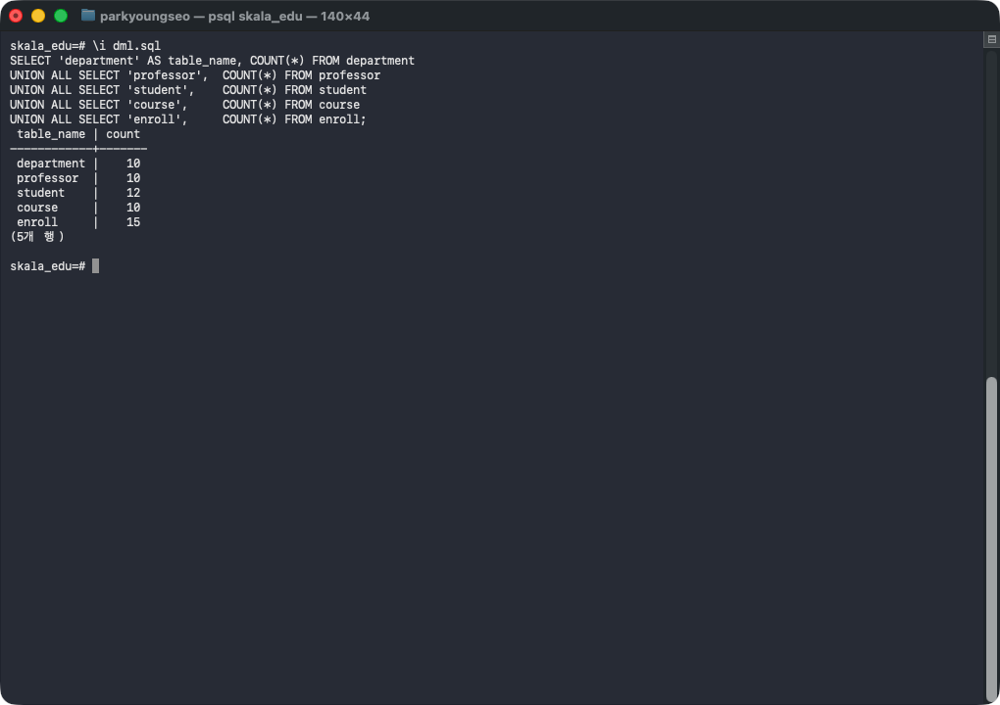
실행 결과 ① psql — 전 테이블 10건 이상 입력 확인: department 10 · professor 10 · student 12 · course 10 · enroll 15건. INSERT 실행 로그는 outputs/03_dml_result.txt.
pgAdmin에서 테이블별 입력 데이터 확인
실행 결과 ② — pgAdmin 4에서 각 테이블을 View/All Rows로 열어 입력된 데이터 전체를 확인 (SELECT * FROM 테이블 ORDER BY PK).
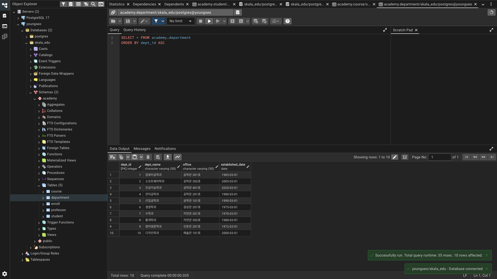
department — 학과 10건 (Total rows: 10).
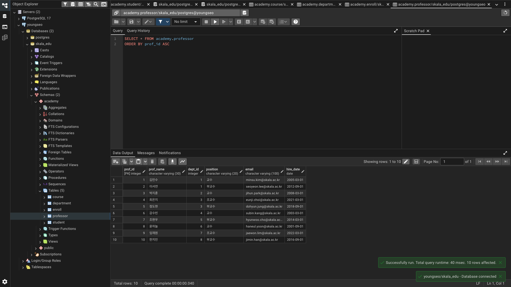
professor — 교수 10건, 직급(교수/부교수/조교수)과 이메일 UNIQUE 확인 (Total rows: 10).
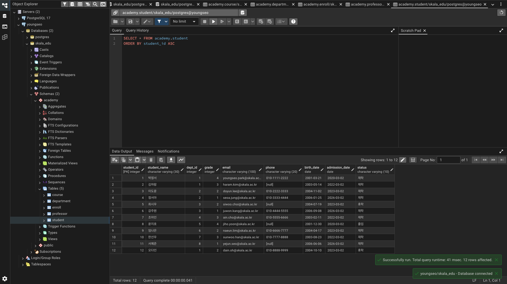
student — 학생 12건, phone 일부 [null](COALESCE 실습용)과 학적상태(재학/휴학/졸업) 확인 (Total rows: 12).
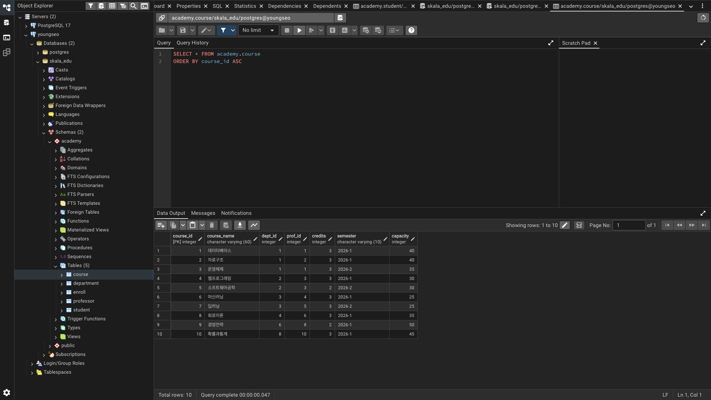
course — 과목 10건, 학점(1~3)·학기·정원 확인 (Total rows: 10).
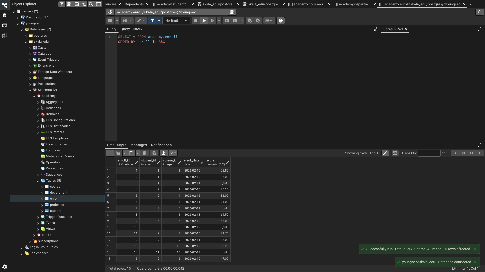
enroll — 수강신청 15건, score 일부 [null] = 미평가 상태(CASE WHEN 실습용) 확인 (Total rows: 15).
6. SELECT + WHERE + ORDER BY 기초 조회
재학 중인 2학년 이상 학생을 학년 내림차순 → 이름 오름차순으로 조회.
SQL
SELECT student_id, student_name, grade, status
FROM student
WHERE status = '재학'
AND grade >= 2
ORDER BY grade DESC, student_name ASC;
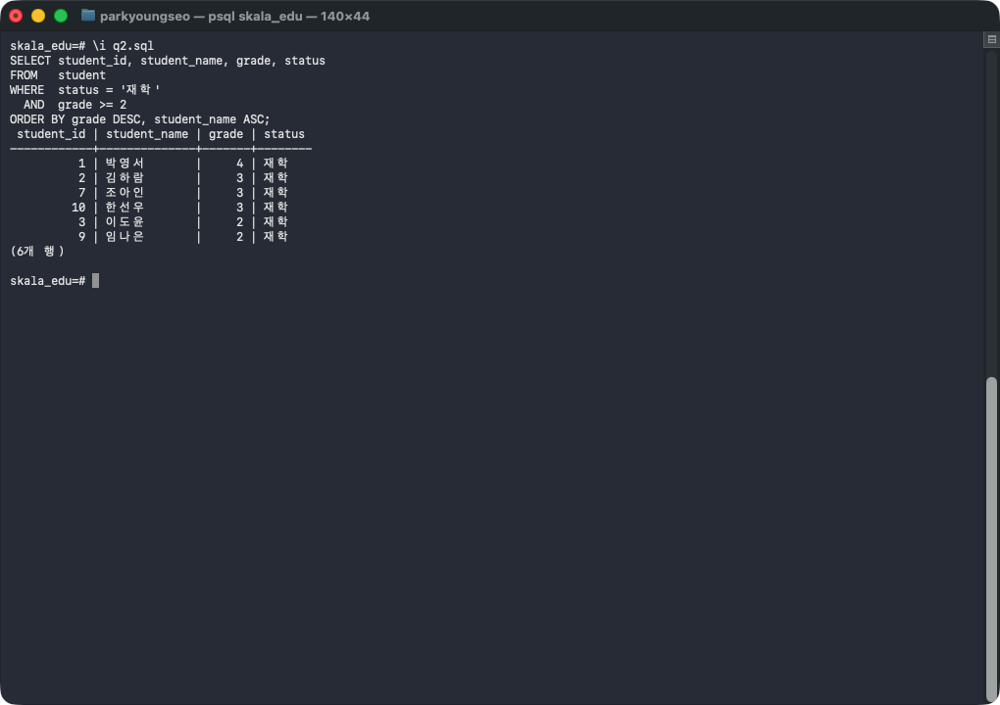
실행 결과 ① psql — 복합 조건(AND)과 다중 정렬 확인: 휴학·졸업·1학년 제외 후 6명, 학년 내림차순 → 동일 학년 내 이름 오름차순.
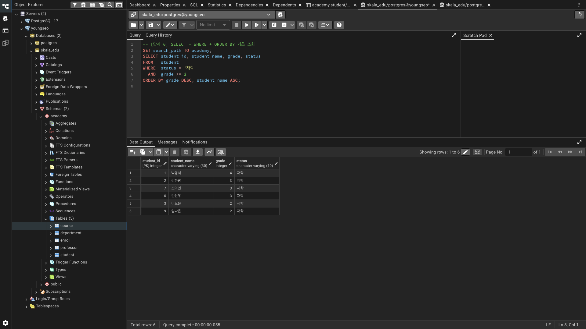
실행 결과 ② pgAdmin 4 Query Tool — 동일 쿼리 실행, Data Output 그리드에서 동일한 6행 확인 (Total rows: 6).
7. COALESCE / CASE WHEN / 날짜 함수 활용
7-1. COALESCE — 연락처 NULL을 '연락처 미등록'으로 표시
SQL
SELECT student_id,
student_name,
COALESCE(phone, '연락처 미등록') AS phone_display
FROM student
ORDER BY student_id;
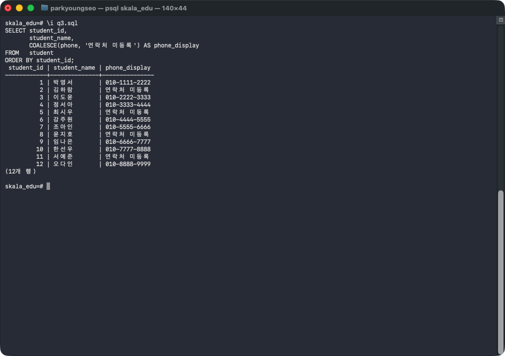
실행 결과 ① psql — phone이 NULL인 4명(김하람·최시우·윤지호·서예준)이 '연락처 미등록'으로 치환되어 표시됨.
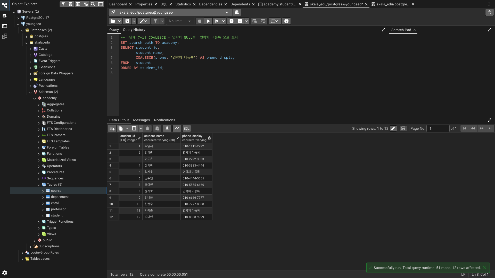
실행 결과 ② pgAdmin 4 Query Tool — 동일 쿼리 실행, 12행 중 NULL 4건이 '연락처 미등록'으로 표시됨 (Total rows: 12).
7-2. CASE WHEN — 성적을 A/B/C/F 등급으로 변환, NULL은 '미평가'
SQL
SELECT e.enroll_id,
s.student_name,
c.course_name,
e.score,
COALESCE(
CASE
WHEN e.score >= 90 THEN 'A'
WHEN e.score >= 80 THEN 'B'
WHEN e.score >= 70 THEN 'C'
WHEN e.score IS NOT NULL THEN 'F'
END, '미평가'
) AS grade_letter
FROM enroll e
JOIN student s ON s.student_id = e.student_id
JOIN course c ON c.course_id = e.course_id
ORDER BY e.enroll_id;
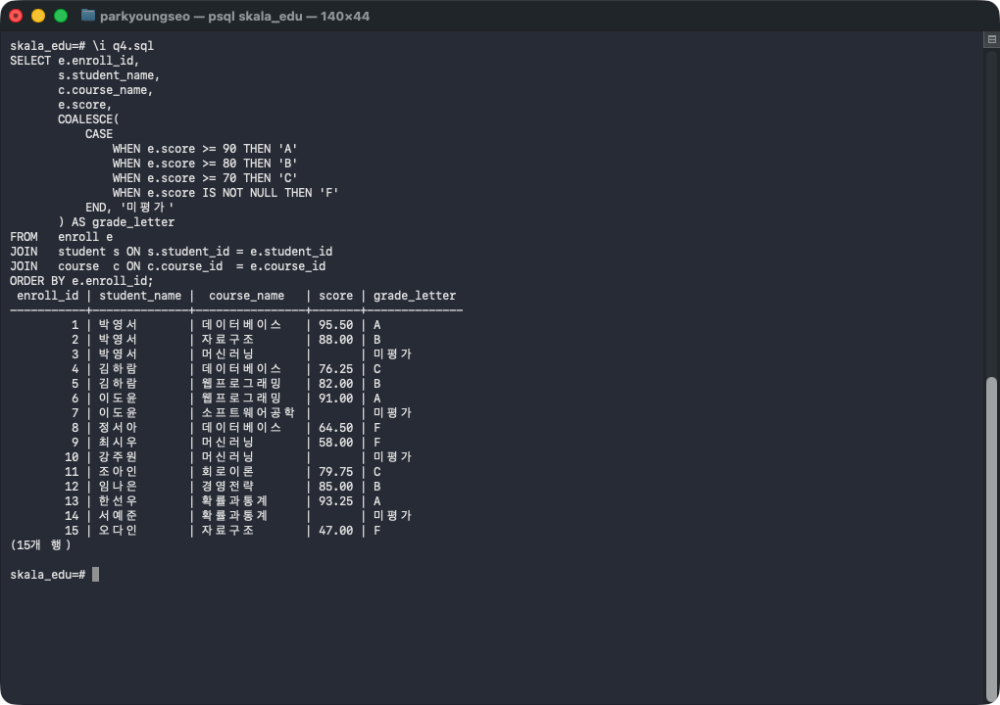
실행 결과 ① psql — CASE로 구간 등급(90↑A, 80↑B, 70↑C, 그 외 F)을 매기고, CASE가 NULL을 반환하는 미평가 4건은 COALESCE로 '미평가' 처리.
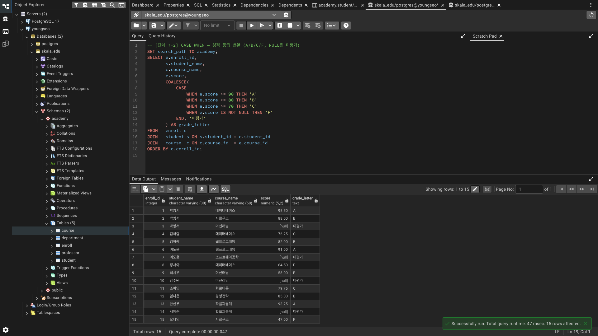
실행 결과 ② pgAdmin 4 Query Tool — 동일 쿼리 실행, [null] 값이 '미평가' 등급으로 변환된 15행 확인 (Total rows: 15).
7-3. 날짜 함수 — 나이(AGE) · 입학연도(EXTRACT) · 재학일수(날짜 연산)
SQL
SELECT student_name,
birth_date,
EXTRACT(YEAR FROM AGE(CURRENT_DATE, birth_date)) AS age,
EXTRACT(YEAR FROM admission_date) AS admission_year,
CURRENT_DATE - admission_date AS days_since_admission
FROM student
ORDER BY age DESC;
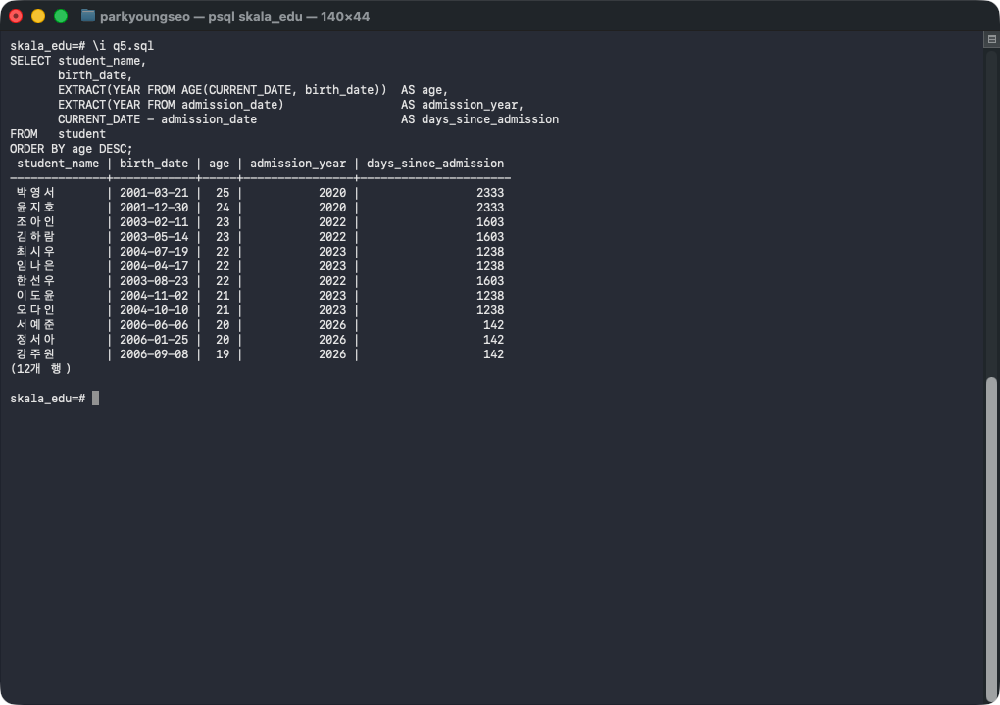
실행 결과 ① psql — AGE()로 만 나이, EXTRACT로 입학 연도, DATE 뺄셈으로 재학 일수 계산 (기준일 2026-07-22).
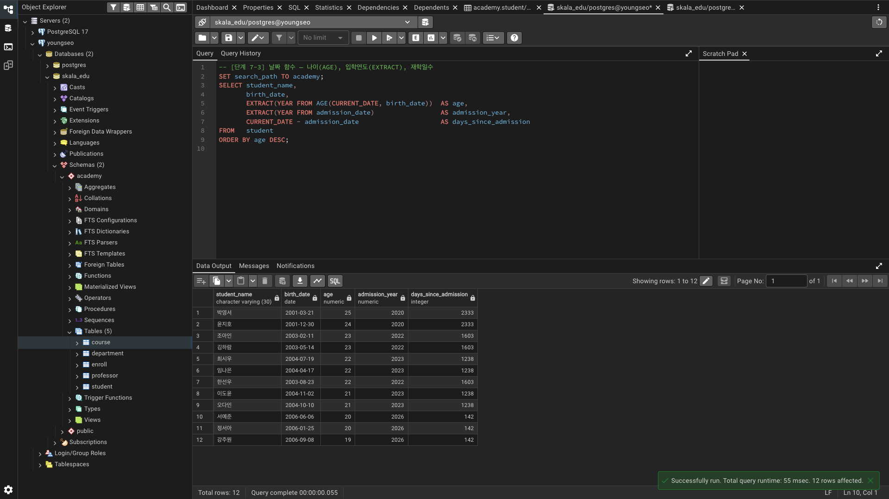
실행 결과 ② pgAdmin 4 Query Tool — 동일 쿼리 실행, 나이 내림차순 12행 확인 (Total rows: 12).
8. 수강신청 교차 테이블 JOIN 조회
8-1. 5개 테이블 JOIN — 학생·학과·과목·담당교수·신청일 통합 조회
SQL
SELECT s.student_name AS 학생,
d.dept_name AS 소속학과,
c.course_name AS 수강과목,
c.credits AS 학점,
p.prof_name AS 담당교수,
e.enroll_date AS 신청일
FROM enroll e
JOIN student s ON s.student_id = e.student_id
JOIN course c ON c.course_id = e.course_id
JOIN professor p ON p.prof_id = c.prof_id
JOIN department d ON d.dept_id = s.dept_id
ORDER BY s.student_name, c.course_name;
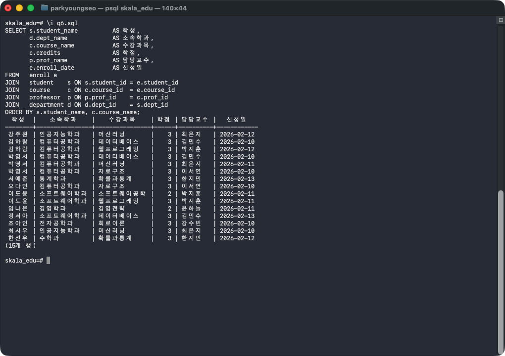
실행 결과 ① psql — 교차 테이블 enroll을 축으로 student·course·professor·department 5개 테이블을 연결. 수강신청 15건 전체가 학과·교수 정보와 함께 조회됨.
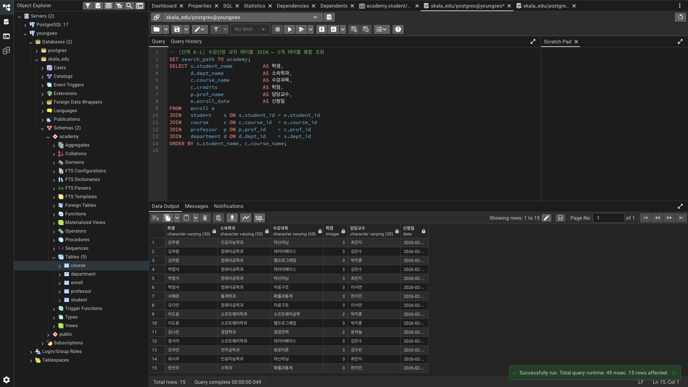
실행 결과 ② pgAdmin 4 Query Tool — 동일 쿼리 실행, 한글 별칭(학생·소속학과·수강과목·학점·담당교수·신청일) 컬럼으로 15행 확인 (Total rows: 15).
8-2. (심화) LEFT JOIN + GROUP BY + HAVING — 수강신청 내역이 없는 학생
SQL
SELECT s.student_id,
s.student_name,
s.status,
COALESCE(COUNT(e.enroll_id), 0) AS enroll_count
FROM student s
LEFT JOIN enroll e ON e.student_id = s.student_id
GROUP BY s.student_id, s.student_name, s.status
HAVING COUNT(e.enroll_id) = 0
ORDER BY s.student_id;
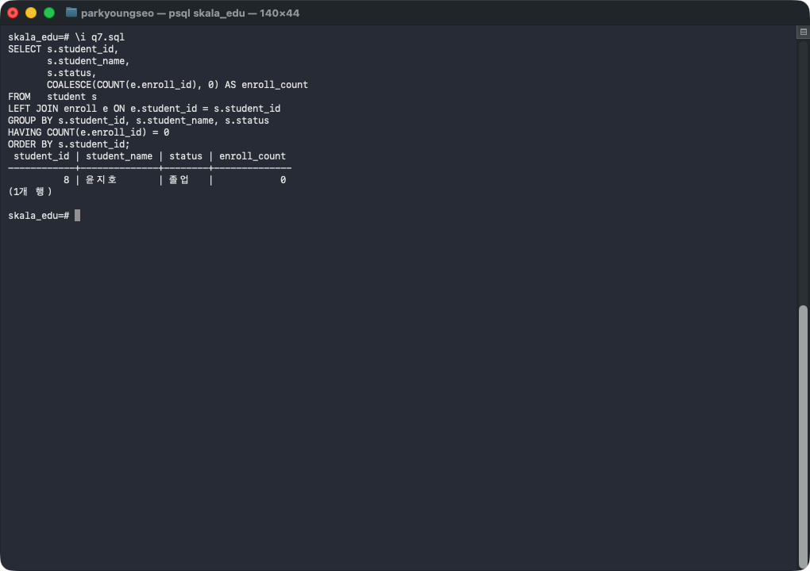
실행 결과 ① psql — INNER JOIN이면 수강 내역이 없는 학생이 결과에서 사라지므로 LEFT JOIN을 사용. 집계 후 HAVING으로 0건인 학생만 남김 — 졸업생 윤지호 1명.
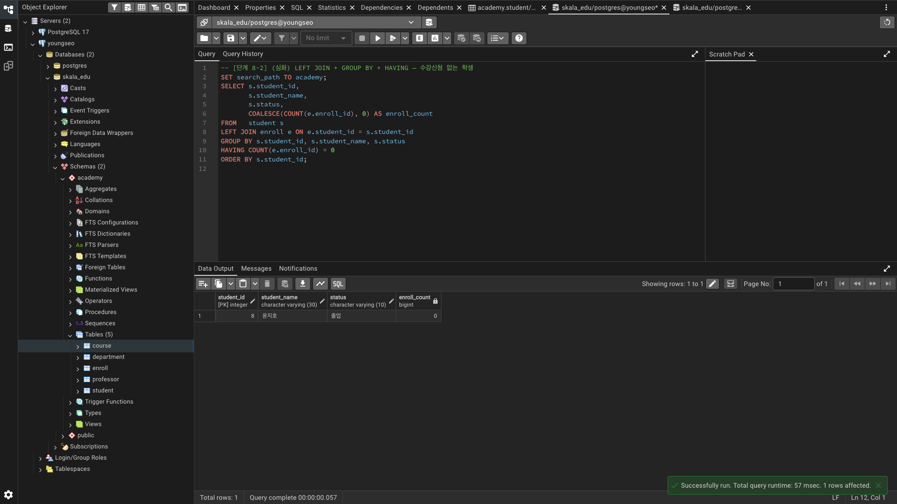
실행 결과 ② pgAdmin 4 Query Tool — 동일 쿼리 실행, 수강신청 0건인 학생 1행(윤지호·졸업) 확인 (Total rows: 1).